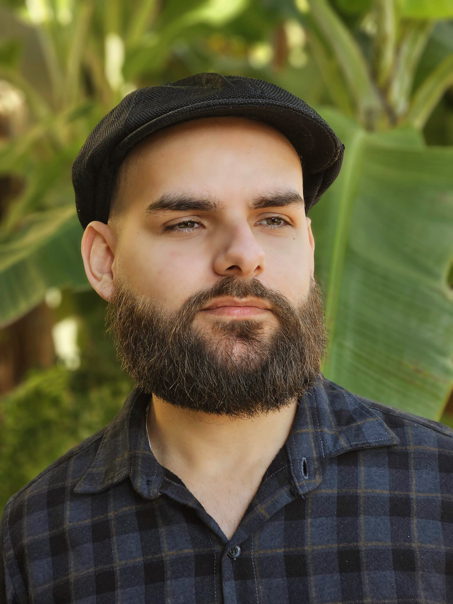

<section id="about" class="py-20 section-bg leaf-pattern">
    <div class="max-w-7xl mx-auto px-4 sm:px-6 lg:px-8">
        <div class="text-center mb-16">
            <h2 class="text-3xl font-bold text-gray-800 mb-4">About Me</h2>
            <div class="w-20 h-1 bg-green-500 mx-auto"></div>
        </div>
        <div class="flex flex-col md:flex-row items-center">
            <div class="md:w-1/3 mb-10 md:mb-0 flex justify-center">
                <div class="max-w-xs rounded-full overflow-hidden border-4 border-green-500 shadow-lg">
                    
                </div>
            </div>
            <div class="md:w-2/3 md:pl-12">
                <h3 class="text-2xl font-semibold text-gray-800 mb-6">Hello, I'm Vinicius Richter</h3>
                <p class="text-gray-600 mb-6">
                    I hold a degree in Forest Engineering and I am currently completing my Master's
                    degree at the Federal University of Santa Maria, while also pursuing a degree in Computer
                    Science at the
                    Farroupilha Federal Institute.
                </p>
                <p class="text-gray-600 mb-6">
                    As part of my Master’s research, I developed a Python library and a QGIS plugin aimed at
                    optimizing data
                    analysis in forest management projects. I currently work as a self-employed data analyst,
                    providing customized
                    data analysis services for clients. In addition, I collaborate with companies on research
                    projects focused on
                    applying computer vision algorithms for qualitative monitoring of forest plantations.
                </p>
                <p class="text-gray-600 mb-8">
                    To strengthen my skills in data science, programming, and geoprocessing, I have actively
                    participated in the
                    Geoprocessing and Remote Sensing Laboratory, as well as the Forest Management and Statistics
                    Laboratory. I
                    also enhanced my expertise during my time at Brasplan and CMPC Celulose Riograndense, where I
                    gained
                    experience in data analysis, geoprocessing, development of interactive dashboards and web apps,
                    and was
                    responsible for building artificial neural networks to model height-diameter relationships in
                    forest stands.
                </p>
                <p class="text-gray-600 mb-8">
                    I am a curious and passionate learner, always seeking new technologies and driven by continuous
                    improvement.
                    My current focus is on deepening my knowledge in data science, machine learning, AI algorithms,
                    and statistics.
                </p>
                <div class="flex flex-wrap gap-4">
                    <span class="bg-green-100 text-green-800 px-3 py-1 rounded-full text-sm font-medium">Python</span>
                    <span class="bg-green-100 text-green-800 px-3 py-1 rounded-full text-sm font-medium">R</span>
                    <span class="bg-green-100 text-green-800 px-3 py-1 rounded-full text-sm font-medium">QGIS</span>
                    <span class="bg-green-100 text-green-800 px-3 py-1 rounded-full text-sm font-medium">Power
                        BI</span>
                    <span class="bg-green-100 text-green-800 px-3 py-1 rounded-full text-sm font-medium">Machine
                        Learning</span>
                    <span class="bg-green-100 text-green-800 px-3 py-1 rounded-full text-sm font-medium">Data
                        Analysis</span>
                </div>
            </div>
        </div>
    </div>
</section>